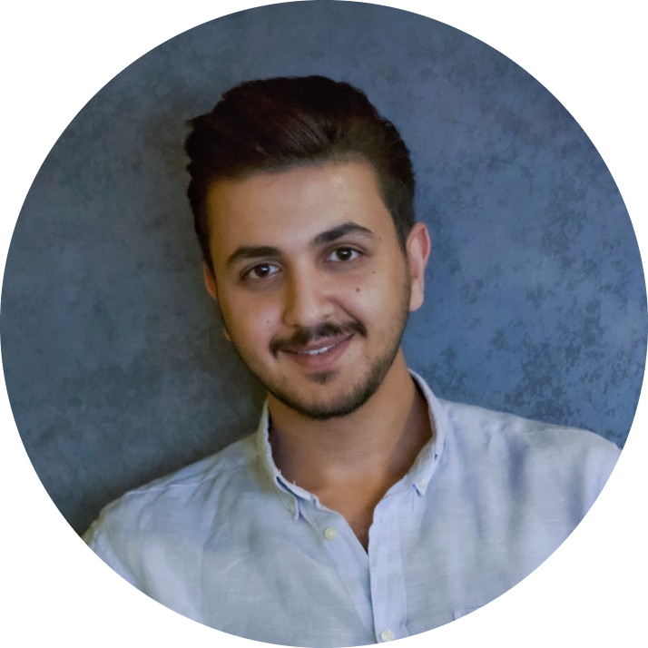

|  |
Abdelslam Enizat
Software Engineer
+962 790020727
afenizat@gmail.com
LinkedIn
|
Abdelslam Enizat
Software Engineer
Contact Me
Summary
As a person with a big passion for working in challenging environments and who has a big interest in
self-development, I am seeking a job that helps me to improve my career and match my skills to learn
more about my job field as well as allow me to have a new challenge.
Experience
Implementation Engineer
SEDCO
June 2022- September 2022
- Performing Database Installation and Management (MS SQL and Oracle).
- Performing networking troubleshooting.
- Respond to internal support calls (from QA and development team) by phone, email, and face-to-face.
- Respond to external support calls from customers and partners.
- Responsible of CRM support cases for S/W support and H/W faulty items.
- Identify and describe problems/bugs in SEDCO products to QA and Development.
- Test SEDCO s/w products in terms of implementation and customer's point of view and build demo
environments.
- Doing the required internal implementation to satisfy the required workflows, customer requirements.
- Participate in doing self-plan tasks and send Status update emails and report work progress.
Writing site documentation in terms of environment installed modules and any special information.
Web & mobile developer Trainee (Internship)
4MATEX
March 2022- May 2022
- Work on low-code platform (Outsystems environment).
- Develop a reactive website and mobile apps from scratch.
- Modeling the database relationships.
- Implement Themes and Advanced UI.
- Using C# and JavaScript code in Outsystems.
Operations team member
AIESEC
August 2021- February 2022
- Attending functional team meetings once a week.
- Consistent contact with Exchange participants and arrange the process of their exchange
opportunity.
- Consistent tracking of personal performance and exchange person progress.
Customer Service Representative
Extensya
April 2019 - June 2019
- Maintaining a positive, empathetic, and professional attitude toward customers at all times.
- Responding promptly to customer inquiries.
- Communicating with customers through various channels.
- Acknowledging and resolving customer complaints.
- Processing orders, forms, applications, and requests.
Trainee in the Networks Section
Irbid District Electricity Company (IDECO)
September 2017 - January 2018
- I employed what I learned in networking and switching in CISCO packet tracer.
- Enhanced my knowledge in network identification and identifying the design structure's
configuration.
Educational Background
Jordan University Science and Technology (JUST)
Jordan-Irbid
Bachelor of software engineering
2022
GPA: 3.34/4 (Very Good)
Al- Balqa' Applied University (BAU)
Jordan-Irbid
Diploma of Information security and networks
2018
GPA: 78/100 (Very Good)
Workshops and Projects
- Work with a group on a 2D Game project (Goldminer) using C# windows form.
- Work with a group on Attendance System project implemented by java (includes multiple threads
and MVC pattern).
- Implement a (Meeting Scheduling Case Study) taking into consideration the principles of
requirement engineering and IEEE 830 standard.
- Work on graduation project named Dental Driver using Android Kotlin which facilitate an idea of
booking and access to the nearest location of the van, and we got a great rating for it "A" grade.
Technical tools
Postman, Fiddler, IIS, Windows server, SoapUI, Python, Java, Android Kotlin, C#, HTML, CSS, Javascript,
Bootstrap, JUnit, Android studio, C++, Windows form App(.NET Framework), Software Testing, Eclipse,
NetBeans and Outsystems environment.
Languages
English Language (Very good in Writing, Reading and Verbal Communication).
Arabic Language (Native).
Technical tools
Former team leader for a volunteer team called (Lenkon Arqa).
Member at Hult Prize in JUST as Teams Coordinator
| Course |
Date |
| CCNA course |
2018 |
| Frontend course |
2022 |